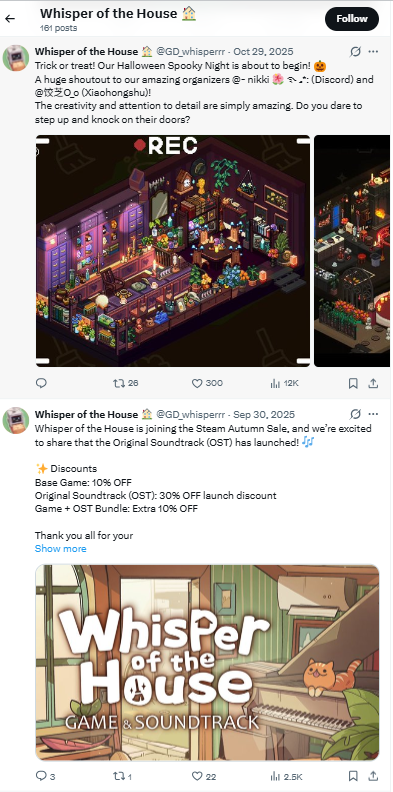
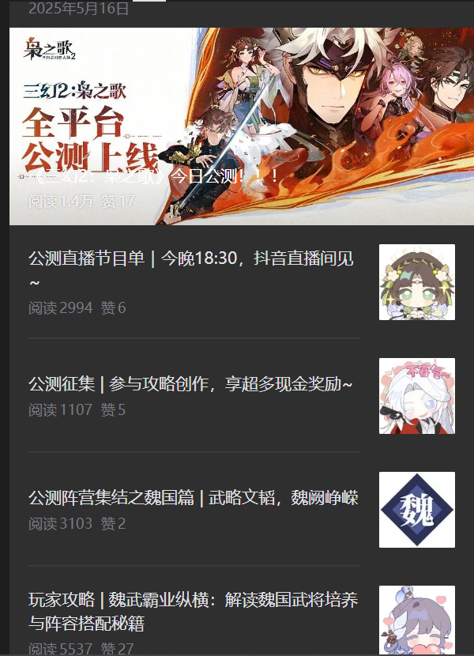
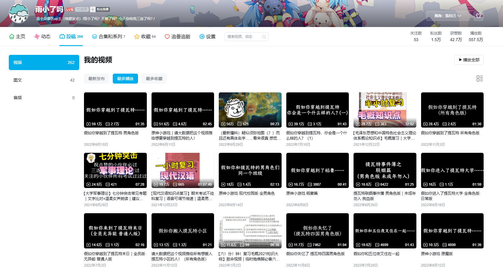

Xiaofei Yu
Social media, community and video content. I run multi-platform channels, track what performs, and write in English and Mandarin.
Research Master's student, Tilburg University · Netherlands (EMEA)
Selected work
Overseas community and launch content: X (Twitter)
Yuanqid Studio · Full-Platform Operations · 2025
Content for the game Whisper of the House across nine overseas platforms, including X, YouTube, Instagram, Reddit, TikTok and Discord, plus a Discord community I built and moderated.

- Halloween "Spooky Night" community event announcement, crediting the Discord and Xiaohongshu organizers: 12K views, 300 likes, 26 reposts.
- All platforms combined: about 50K views and 2K likes and shares.
Open-beta launch: WeChat Official Account
Alibaba · Game Operations Intern · May 2025
Post series for the open-beta launch day of the Chinese-language game 《三幻2：枭之歌》. Titles below are translated from Chinese.

- Open-beta launch announcement: 14K reads, 17 likes
- Livestream schedule, tonight 18:30 on Douyin: 2,994 reads, 6 likes
- Call for player-guide submissions with cash rewards: 1,107 reads, 5 likes
- Faction campaign, Wei kingdom edition: 3,103 reads, 2 likes
- Player guide on Wei generals and team compositions: 5,537 reads, 27 likes
Video channel: Bilibili
Independent creator · 2020 – present · writing, filming and editing
5.6Mtotal plays
427Klikes received
15Kfollowers
304uploads

- "What if you were transported to Teyvat?" scenario video (male characters edition): 591K views
- Scenario video that asks the algorithm to show it to fans of the game: 516K views
- "What kind of person would you be in Teyvat?" (Part 1): 391K views
- University exam-review videos, an educational series: 197K to 287K views each